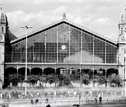

31. Nyugati Station

This section of the Great Boulevard ends in the busy traffic junction of Nyugati tér. On this square is the main entrance of the Western Railway Station which was the first station in Budapest and is still a very busy one. It was built on the site of the original station of 1846.
The Parisian Eiffel Company was the constructor of Nyugati Station's huge, iron-framed hall. The railway station is a key part of the cityscape even today. The hall, designed by the Parisian Eiffel-Studio and August de Serres, is a magnificent example of the architectural use of cast iron frames considered very modern in the late 1800's. At the time of its opening in 1877, with its hall of 6,153 metres square and 25 metres high, and with its additional buildings, it was the fifth largest railway station in the world.
The Western Railway Station and its surrounding have been completely rebuilt during the 1980's. An overpass was built for the cars, an underpass was constructed for the pedestrians and a shopping center was raised directly next to the station. The station became easily accessible by means of transportation as one station of the Subway 3 lies next to it.
The role of the suburb trains became more important during the 2000's, whose key factor is the central Western Railway Station with its good connections to other means of transportation. As a consequence, rather than winding up the station, we can expect it to be renovated and maintained, despite of the continuous delays in the plans. The station is technically outdated, and just like the renovation of the hall, the reconstruction of the system of the lines and the guards are in need in order to boost the capacity.